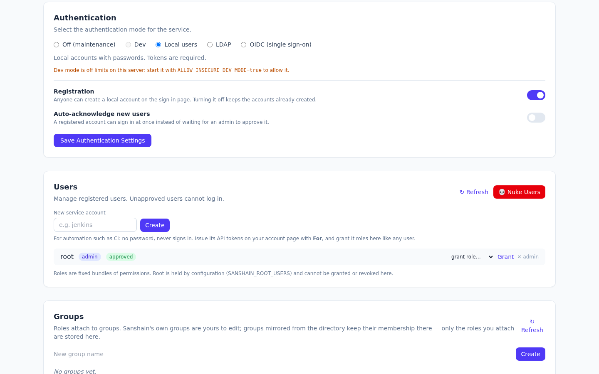
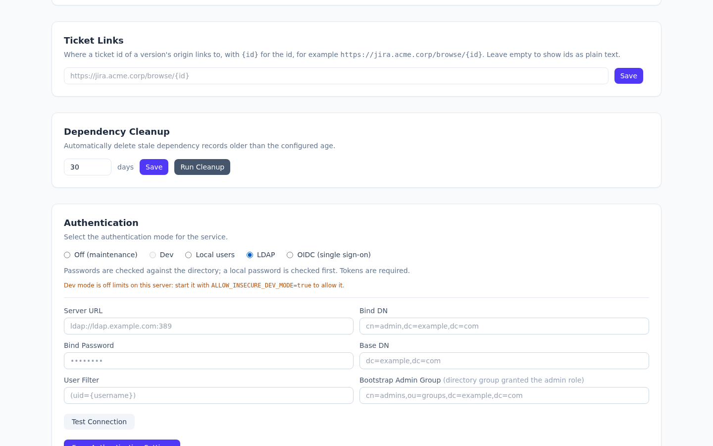

Humans sign in with a password, through the directory or through an OpenID Connect provider; builds and scripts always use an API token. This chapter is the human side: how a login is checked, where the accounts come from, and what keeps an operator from locking themselves out.
What changed in 2.10.0
INITIAL_AUTH_MODE names a mode. Off lets administrators sign in instead of
refusing every login.
The mode is a setting (auth_mode), chosen in the
Authentication section of /admin.html or with
PUT /admin/auth-config (manage_auth_config). A fresh instance starts in
Off unless INITIAL_AUTH_MODE names another mode for its first start (see
Configuration); an existing instance keeps the mode it has.
| Mode | Admin page | Who signs in | API |
|---|---|---|---|
disabled |
Off (maintenance) | Administrators only, through the source that was active before Off, or a local password. See Off. | 503 for everyone, MCP included. |
dev |
Dev | Administrators only, by local password. | Provide, require and catalog without a token, when the server allows it; see Developer mode. |
local |
Local users | Local accounts. Self-registration only while its switch is on; see Local accounts. | API token required. |
ldap |
LDAP | Directory users, and every local account by its local password, which is checked first. Nobody registers. | API token required. |
oidc |
OIDC (single sign-on) | People through the provider's redirect flow, and every local account by its password. Nobody registers. | API token required. |
"Administrators" are the holders of manage_auth_config: root, the
admin role, and anyone given that permission, whether stored or conferred by a
directory group. While only they may sign in, everyone else's login answers 403 with
the reason, and sessions opened earlier stop working until the mode changes again.
PUT /admin/auth-config accepts off and maintenance as
spellings of disabled; any other mode answers 400
Invalid auth mode: …. ldap without an ldap_config in the
same request answers LDAP config required for ldap mode; oidc without an
oidc_config stored or supplied answers
OIDC config required for oidc mode; dev on a server without the gate
answers dev mode needs the server started with ALLOW_INSECURE_DEV_MODE=true. A
refused request changes nothing. Every change is an UPDATE_SETTINGS audit entry.
The sign-in page asks GET /auth/options (no sign-in needed) what to offer: the
register tab, the SSO button, and a notice while only administrators can sign in.
Administrative routes (/admin/*) take a session token from
POST /auth/login; an API token on them answers 401. The one exception is
the backup download, which admits a full API token. A session lasts 7 days.
Off is for the times nobody but the operators should touch the instance: a database backup or restore, a migration, rebuilding the directory groups. Builds must not provide against an instance that is about to be restored, and people must not change data that is about to be wiped. In Off:
503
Service is in Maintenance Mode / Disabled, for every caller, administrators
included.
403 Sanshain is in maintenance; only administrators can sign in, and the sign-in
page shows the same notice. A session someone else opened before Off stops working.
Off remembers the mode it interrupted. Switching from LDAP to Off keeps LDAP as
the sign-in source: administrators whose rights come from a directory group sign in with their
directory password as usual, and their group still confers the rights while Off lasts. The same
holds for OIDC through the SSO button. Local passwords work throughout, so root is
always the way in, also when the directory is the thing under maintenance and does not answer. A
fresh instance has no previous mode: there only local passwords work, which on day one means the
initial admin.
A typical window, backing up the database and rebuilding the directory groups:
503 and retry later; people see the maintenance notice.
root with its local password.
In Local mode, the admin page shows two switches below the mode (manage_settings):
registration_enabled, off by default): anyone can
create an account on the Register tab of the sign-in page or with
POST /auth/register ({"username","password"}). Closed, the tab is not
shown and the call answers 403 registration is closed on this instance. Closing it
keeps every account it created; deleting accounts is a separate, deliberate action. An instance
updated from 2.9 or earlier starts with it closed.
auto_approve_users, off by default): a
new account can sign in at once. Off, it is pending until an administrator approves it
(approval): the Users section of
the admin page, or POST /admin/users/{id}/approve (manage_users). The
register tab and the answer of POST /auth/register ({"approved": true|false}) say which applies, so nobody is told to wait who does not have to.
A pending user's login answers 403; a wrong password 401, and so does an
empty one, refused before any check. In the Users list every account carries its
badges: one per role it holds directly (admin, viewer, …), and
approved or pending.
Registration refuses a name twice: 409 User already exists, and
409 This username is reserved for every name in SANSHAIN_ROOT_USERS
that has no account yet (startup creates a locked one, see
Root users). Deleting a user (DELETE /admin/users/{id}) revokes their sessions and API tokens. Users change their own password on
/account.html; there is no administrative password reset.

The Users section shows only the accounts waiting for approval, with a count of the others. To find the rest, search by username or display name, or pick chips: kind (service account, local, LDAP, OIDC, unknown), status (pending, approved) and role. Chips of different kinds narrow the list together; two chips of the same kind widen it ("LDAP, and admin or maintainer").
Every row of the Users section carries a tag for the kind of account: service account, or how the person last signed in, local, LDAP or OIDC. A user who has not signed in since 2.11 shows unknown until their next sign-in.
People are shown by their display name, with the username beside it, in the
user list, the groups and maintainers, the token For choice, the audit log and the
header. LDAP users get it from displayName and OIDC users from the
name claim, refreshed at every sign-in (and cleared when the provider no longer
sends one) and not editable in Sanshain. Local users set
their own on the account page (PUT /auth/display-name); a service account's is set
with Name in its row (PUT /admin/users/{id}/display-name,
manage_users). Without one, the username is shown.
Next to the name sits a circle with the person's initials. The Gravatar pictures
switch above the user list (POST /admin/settings/gravatar,
manage_settings, off by default) puts their picture from gravatar.com over it. The
key is the SHA-256 of the e-mail address the directory (mail) or the OIDC provider
(email) gave at the last sign-in, and none when it gave none; Sanshain stores only that key, never the address,
and nothing is requested from gravatar.com while the switch is off. Someone without a picture
keeps their initials.
While the switch is on, everyone can pick their own picture address in Picture
on the account page (PUT /auth/gravatar, {"email": "…"}; blank
removes it). It wins over the provider's address and no sign-in overwrites it; a local user
gets a picture only this way. Here too only the key is stored, so the field empties after
saving and the page says that the address is set, not which one.
Automation gets a service account: New service account in the
Users section of the admin page, or POST /admin/users with
{"username":"jenkins"} (manage_users), in any mode. It is approved at
once and has no password: it never signs in, not by password, not through the directory, not
through the provider. Its API tokens are issued by holders of manage_users on their
own /account.html, choosing it under For (POST /auth/tokens
with "for_user":"jenkins"); a token cannot be issued for a person this way. Every
holder of manage_users sees all service-account tokens in their list, marked
For jenkins · issued by alice, and may revoke any of them. The account's rights are the
roles granted to it, like any user's; the audit log records the issue as
CREATE_TOKEN naming the account, and every call made with the token as the account.
The name follows the rules of registration: taken names and root names are refused
(409), and it may not contain spaces (400).
On the first start, with no user in the database, Sanshain creates
INITIAL_ADMIN_USERNAME (root) with
INITIAL_ADMIN_PASSWORD or a random password, grants it the admin role
and prints both lines to stderr:
[INITIAL SETUP] Admin user created. Username: root, Password: <random>
[INITIAL SETUP] Change this password immediately at https://sanshain.corp/admin.html
The second line names the admin page under PUBLIC_BASE_URL; without it, under the
bind address (http://0.0.0.0:3000/admin.html by default). A set but empty
INITIAL_ADMIN_PASSWORD counts as unset, and an empty password is never accepted at
login.
That account is also root by the default of
SANSHAIN_ROOT_USERS: every permission, including ones no role grants, from
configuration rather than from the database. Name a second account there as the break-glass path;
the full rules are in Configuration.
Select LDAP in the Authentication section and fill the form:
| Field | Meaning | Example |
|---|---|---|
Server URL (server_url) |
ldaps:// is TLS from the first byte; ldap:// is plain, or StartTLS
with use_tls. Without a port, 636 for ldaps:// and 389 for
ldap://. Saving and Test Connection refuse anything else with 400:
a missing scheme, a missing host (ldap:/dc01:636, one slash) or a port outside
1–65535.
|
ldaps://ldap.example.com:636 |
Bind DN (bind_dn) |
The service account that searches for users and reads their groups. | cn=readonly,dc=example,dc=com |
Bind Password (bind_password) |
Its password. Stored, never shown back: the read endpoint and the form return
****, and sending **** keeps the stored one.
|
|
Base DN (base_dn) |
Subtree searched for users. | dc=example,dc=com |
User Filter (user_filter) |
{username} is replaced with the login name, escaped for LDAP filter syntax.
Default (uid={username}); Active Directory uses
(sAMAccountName={username}).
|
(uid={username}) |
Username attribute (username_attribute) |
The attribute of the found entry that names the Sanshain account, whatever the person typed.
Empty: sAMAccountName when the entry has one, else uid, else the
typed name. A filter such as (|(uid={username})(mail={username})) then lets
axel and a.smart@alva.com sign in as the same account. The user
filter must find the entry by this attribute too, because group lookups search by the
account's name.
|
empty |
Bootstrap Admin Group (admin_group) |
A directory group whose members get the admin role. Saving it creates (or
updates) a directory group of that name in the
group mapping with admin attached; from there
you can attach other roles or add more groups. Empty disables.
|
cn=admins,ou=groups,dc=example,dc=com |
use_tls (API only) |
true upgrades a plain ldap:// connection with StartTLS before the
first bind. Ignored on ldaps://. The form has no control for it; set it with
PUT /admin/auth-config.
|
false |
Test Connection (POST /admin/auth-config/test with the form's
fields) connects and binds with the service account;
Save Authentication Settings applies. The same through the API:
curl -X PUT $SANSHAIN/admin/auth-config \
-H "Authorization: Bearer $SESSION" -H "Content-Type: application/json" \
-d '{
"auth_mode": "ldap",
"ldap_config": {
"server_url": "ldaps://ldap.example.com:636",
"bind_dn": "cn=readonly,dc=example,dc=com",
"bind_password": "secret",
"base_dn": "dc=example,dc=com",
"user_filter": "(uid={username})",
"username_attribute": "",
"admin_group": "cn=admins,ou=groups,dc=example,dc=com",
"use_tls": false
}
}'
GET /admin/auth-config returns the mode and the configuration with the password
redacted.

The local password comes first. When a local account of that name exists and the password matches it, the user is signed in and the directory is never asked. A user whose local and directory accounts share a name but not a password therefore cannot lock their directory account by typing the local one: only a password that is wrong locally reaches the directory, where every failed bind counts towards the lockout policy. Otherwise the directory checks it:
Could not connect to LDAP server at …: this container has no route to 10.1.2.3: check the
network, VPN or Docker network of the pod. See When the directory is unreachable.
LDAP_OPERATION_TIMEOUT_SECS).
dn and
memberOf.
What the user may do is decided on every authorisation check: their memberOf groups
are read through the service account, cached for
SANSHAIN_DIRECTORY_GROUP_TTL_SECS (300), and matched against the directory groups in
the group mapping; the roles attached to matching groups apply. A
promotion or demotion in the directory takes effect within the cache TTL, without a new login.
When the directory is unreachable, directory roles are omitted (see
Directory group caching). Because the
local check comes first, root and local accounts are never locked out by the directory, whether it
refuses or is down.
At every LDAP sign-in Sanshain also reads the entry's immutable ID, objectGUID in
Active Directory or entryUUID in OpenLDAP, and keeps it with the account. The
accounts that belong to the same entry are folded into one: the one found by that ID, the one
named by the username attribute, the one named as typed and the one named by the entry's
mail. Roles, group memberships, maintainerships, favourites, API tokens and sessions
move to the account that carries the username; the audit log records each merge
(MERGE_USER). So two accounts created before 2.11, one by the short name and one by
the e-mail address, become one the next time the person signs in. When the directory renames the
person (axel becomes axel.dumb), the ID still matches, and the account
is renamed (RENAME_USER) instead of a new one being made. Accounts named in
SANSHAIN_ROOT_USERS are never renamed or merged, and service accounts never take
part.
The connect timeout cannot help once the port answers. A scheme and port mismatch, or a firewall
that accepts and then drops, used to hang the request until the ingress gave up with
502 Bad Gateway. Since 2.6.0 every exchange after the connect runs under the
operation timeout. Test Connection answers 400 with:
LDAP connection failed: Connection failed: LDAP server at ldaps://ldap.example.com:389 accepted the connection but did not respond within 10 s. Check that ldaps:// uses the TLS port and StartTLS the plain one.
Only Test Connection shows the text. A login that hits the same stall is treated like any
directory refusal: the local password check runs and the caller gets a bare 401.
Since 2.8.0 a failure before the connection is up is explained in plain words, with the kernel's
own text in brackets where it adds something: the name did not resolve, there is no route from
this container, the network is unreachable, the port refused, or nothing answered within 5 s.
Test Connection then appends a network diagnosis gathered inside the container,
one line each, under the message and in the diagnostics array of the
400 body:
LDAP connection failed: Could not connect to LDAP server at ldaps://ldap.example.com:636: this container has no route to 10.1.2.3: check the network, VPN or Docker network of the pod
DNS: ldap.example.com resolves to 10.1.2.3, fd00::1 (1.2 ms)
Resolvers: 10.96.0.10 (search default.svc.cluster.local, svc.cluster.local, cluster.local)
10.1.2.3: ping no route; route no route from this container; tcp/636 no route
fd00::1: ping answered in 0.4 ms; route via local address fd00::2; tcp/636 refusednameserver and search entries of the
container's /etc/resolv.conf.
ping), the kernel's route
lookup (route, the local address it would send from, or
no route from this container), and a TCP connect to the port (tcp/636:
accepted, refused, no route, or
no answer within 2 s). The three together tell "host down" from "host up, port
closed" from "no way there at all".
The echo uses an unprivileged ICMP socket. Docker allows those by default; on Kubernetes the line
reads ping not permitted in this container (net.ipv4.ping_group_range) unless the pod
sets that sysctl, and the route and TCP lines still answer. Each probe is bounded by 2 s and the
whole diagnosis by 5 s. Failures after the connection is up (TLS, a stall, the bind) carry no
diagnosis: the network was proven at that point. TLS failures are explained the same way, for
example
the server certificate is not trusted: its CA is not in the trust store; mount the CA with
EXTRA_CA_CERTS_DIR (…).
| Server URL | use_tls |
What happens |
|---|---|---|
ldaps://host:636 |
any | Correct: TLS from the first byte on the TLS port. |
ldap://host:389 |
true |
Correct: StartTLS upgrades the plain connection in-band. |
ldap://host:389 |
false |
Correct but unencrypted. A lab, not a directory of people. |
ldaps://host:389 |
any | Stalls: a TLS handshake sent to a port expecting plain LDAP. |
ldap://host:636 |
any | Stalls: a plain LDAP message sent to a port expecting a TLS handshake. |
Keep the ingress timeout above the operation timeout so Sanshain's message, not the proxy's, reaches the admin page.
ldaps:// and StartTLS verify the directory's certificate. The image trusts the public
authorities; a private or corporate CA is mounted and named by EXTRA_CA_CERTS_DIR,
see Additional CA certificates.
Without it, Test Connection fails on certificate verification.
OIDC is for people. Select OIDC (single sign-on) in the Authentication section and fill the form with the fields below, or send them with the API:
curl -X PUT $SANSHAIN/admin/auth-config \
-H "Authorization: Bearer $SESSION" -H "Content-Type: application/json" \
-d '{
"auth_mode": "oidc",
"oidc_config": {
"issuer_url": "https://login.example.com/realms/corp",
"client_id": "sanshain",
"client_secret": "…",
"redirect_url": "https://sanshain.corp/auth/oidc/callback",
"username_claim": "preferred_username",
"groups_claim": "groups",
"admin_group": "sanshain-admins"
}
}'| Field | Meaning |
|---|---|
issuer_url |
The provider; discovery reads
<issuer_url>/.well-known/openid-configuration. The provider's key set
(jwks_uri) must be served over https; a private or corporate CA
goes through EXTRA_CA_CERTS_DIR, see
Additional CA certificates.
|
client_id, client_secret |
The client registered with the provider. The secret is stored and never returned; sending
**** keeps the stored one.
|
redirect_url |
Must be this instance's /auth/oidc/callback under the URL users open, and
registered with the provider. Its origin is also the fallback for
PUBLIC_BASE_URL.
|
scopes |
Default ["openid","email","profile"]. |
username_claim |
ID-token claim used as the username. Default preferred_username. |
groups_claim |
ID-token claim carrying the user's groups. Default groups. |
admin_group |
A value of that claim whose bearers get the admin role at login. Grant-only: a
later token without the group does not revoke it. Other OIDC groups confer nothing; the
group mapping is for LDAP groups.
|
The sign-in page shows Sign in with SSO (GET /auth/oidc/login) while
OIDC is the sign-in source, which includes an Off that interrupted OIDC; otherwise the button is
hidden and both routes answer
403 single sign-on is not the sign-in source of this instance. The flow is
authorization code with PKCE: state, nonce and verifier travel in a 10-minute
HttpOnly cookie; the callback (GET /auth/oidc/callback) exchanges the
code, verifies the ID token (signature against the provider's JWKS, nonce, issuer, audience,
expiry), creates or finds the shadow account (approved) and sets the session cookie, then
redirects to the dashboard (/), where a local sign-in lands too. Without a configuration both routes answer
400 OIDC is not configured; a callback without its cookie answers
400 no OIDC login in progress; a provider that cannot be reached at discovery answers
500 OIDC discovery failed: …, and a key set served over plain http answers
500 OIDC discovery failed: Url must use TLS: '…'.
Developer mode is for a trial on a laptop: provide,
require, catalog and the MCP endpoint take requests without a token and act as a built-in
dev_user, a service account with the admin role that never signs in (one
created before 2.10 had a fixed password and is locked on startup). The admin pages do not: they
need a signed-in administrator, and only administrators sign in. It needs two things at once:
INITIAL_AUTH_MODE=dev on a fresh instance.
ALLOW_INSECURE_DEV_MODE=true in the environment.
Without the gate the Dev option on the admin page is greyed out with a hint, and
PUT /admin/auth-config refuses it. A stored Dev mode on a server without the gate is
switched to Local on startup, which is what such an instance did all along (Dev could be picked
without the gate before 2.10).
SANSHAIN_DEV_MODE no longer does anything. Before 2.10 it opened the API whatever the
sign-in mode was; a server that still sets it logs that it is ignored.
With both, startup logs
SECURITY WARNING: dev_mode is ENABLED - API endpoints accept unauthenticated requests. Disable
it in production.
The gate belongs on a laptop and nowhere else; a persisted setting left behind by configuration
drift cannot open a production instance on its own.
Checked against v2.10.0.